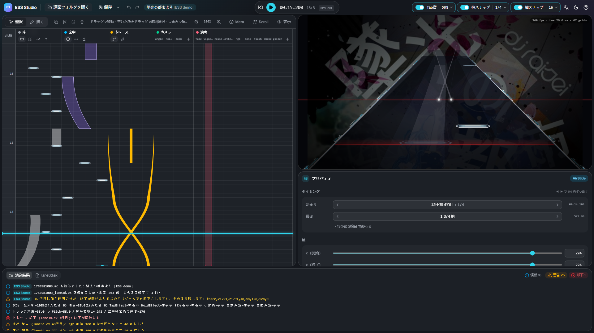

ES3 Studio の使い方
ES3 Studio は、Malody V の Slide 用スキン Extra-Slide v3（ES3） の拡張ファイル lane3d.ex を作る、ブラウザで動くエディターです。
空中ノーツ・トレース・カメラ演出・画面演出を、拍のタイムラインと、ゲームと同じ見た目の 3D プレビューを見ながら置けます。

必要なもの
| 項目 | 内容 |
|---|---|
| パソコン | Windows / macOS / Linux。スマートフォン・タブレットには対応していません |
| ブラウザ | Chrome か Edge（推奨）。ほかのブラウザでは、保存はダウンロードになります |
| 譜面 | Malody V の Slide の譜面で、Free Mode が ON（譜面エディターのスイッチ）。曲のフォルダごと開きます |
| ゲーム側 | 確かめるときは、スキンに Extra-Slide v3 を選んでおきます |
インストールは要りません。ページを開けばそのまま使えます。譜面やファイルがどこかへ送られることはなく、すべてお使いのパソコンの中で動きます。
はじめかた
- 画面の真ん中か左上の 「譜面フォルダを開く」 を押し、譜面（
.mc）がある曲のフォルダを選びます → 開く・保存 - 左のタイムラインで要素を置き、右下のプロパティで値を整えます → タイムライン / プロパティと要素
- 右上のプレビューと再生（Space）で、ゲームでの見え方を確かめます
- 「保存」（Ctrl+S）で
<譜面名>_lane3d.exを譜面フォルダに書きます。ゲームで譜面を開くと反映されます
画面の見かた
| 場所 | 内容 |
|---|---|
| 上のツールバー | 開く・保存・再生・時刻、Tap音・拍スナップ・横スナップ、言語・テーマ・ヘルプ |
| 左: タイムライン | 下から上へ時間が流れます。床・空中・トレース・カメラ・演出の段に要素を置きます |
| 右上: プレビュー | スキンのスクリプトをそのまま動かした 3D の画面。背景画像も譜面の指定どおりに出ます |
| 右下: プロパティ | 選んだ要素のタイミングと値 |
| 下: 読込結果 / lane3d.ex | 読み込みの結果（警告・却下）と、保存する内容 |
パネルの境目はドラッグで大きさを変えられます。
ページ
- 開く・保存 — 譜面フォルダの開き方、読み込むファイル、保存のしかた
- タイムライン — 要素の置き方・動かし方、スナップ、再生、キーボードショートカット
- プロパティと要素 — 値の編集と、要素の種類
- 譜面の情報（Meta） — 曲名・難易度名・Free Mode・背景画像など
- 流れ方（Scroll） — ノーツグループごとの速さ（hs・timinggroup）